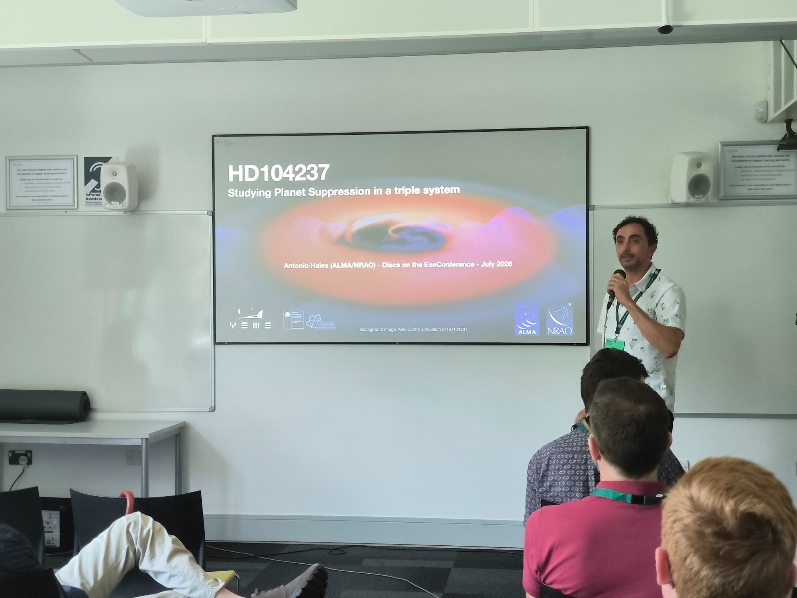
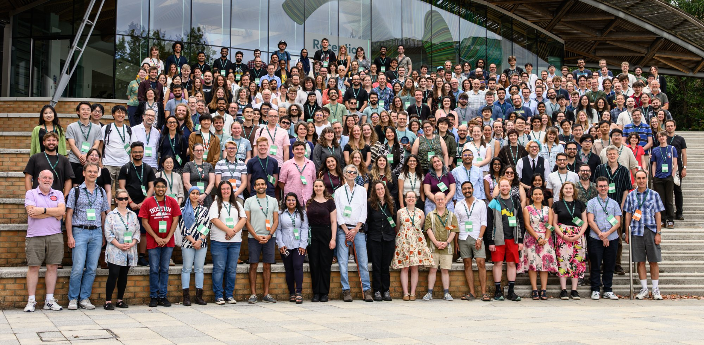
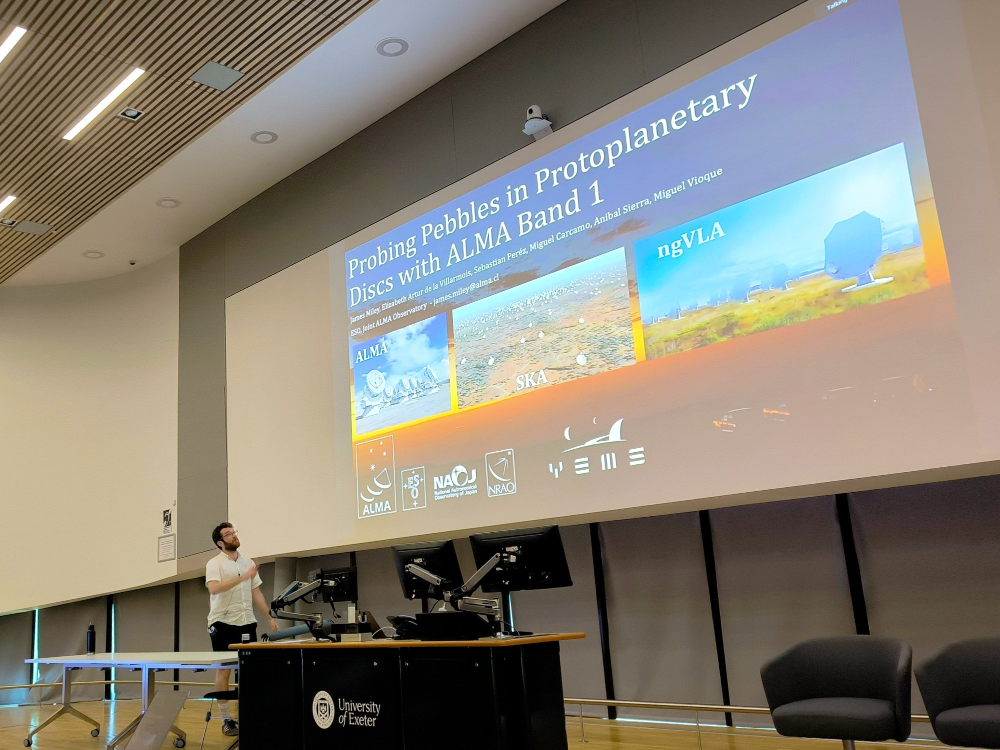
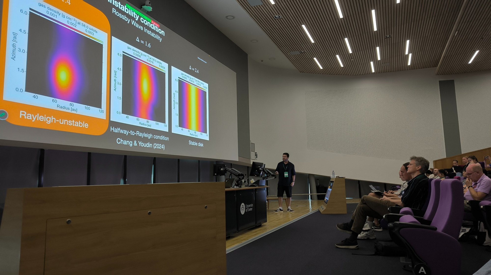
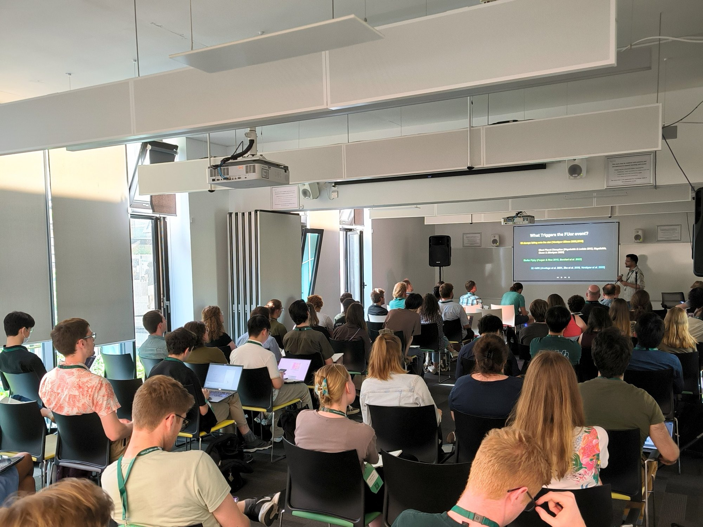
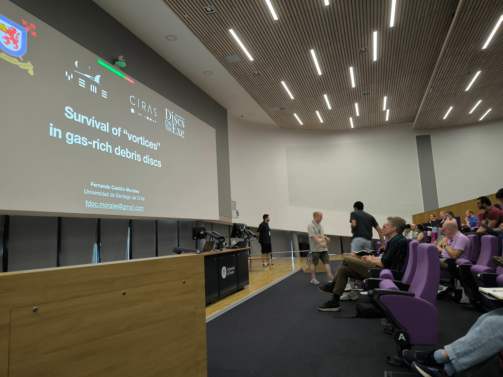
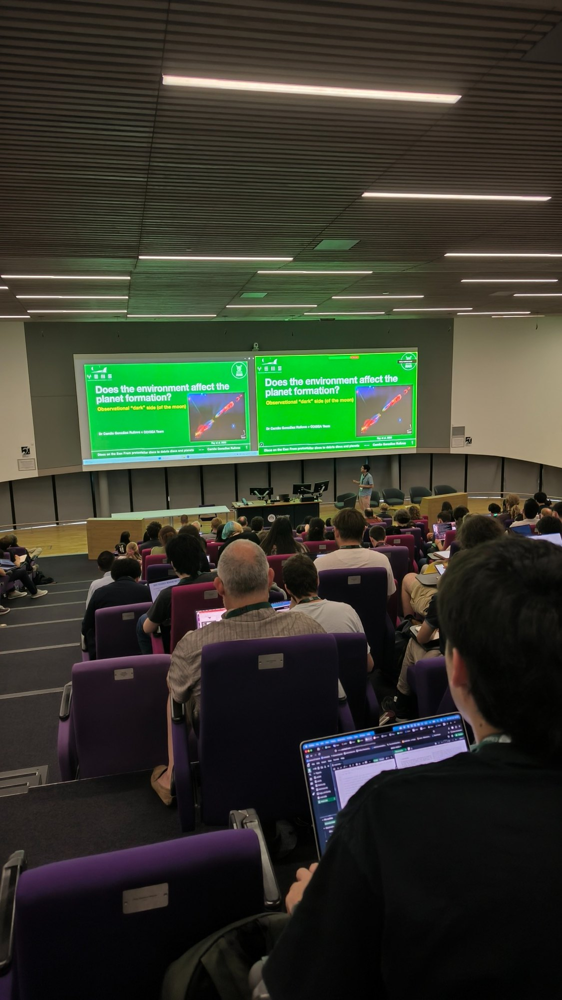
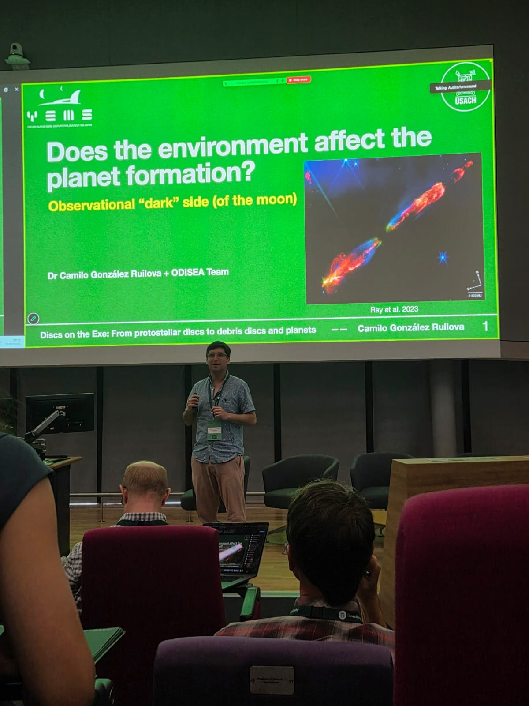
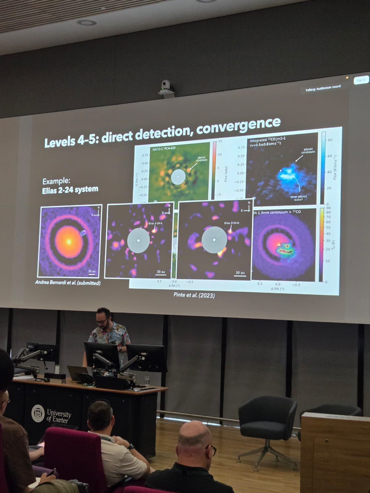
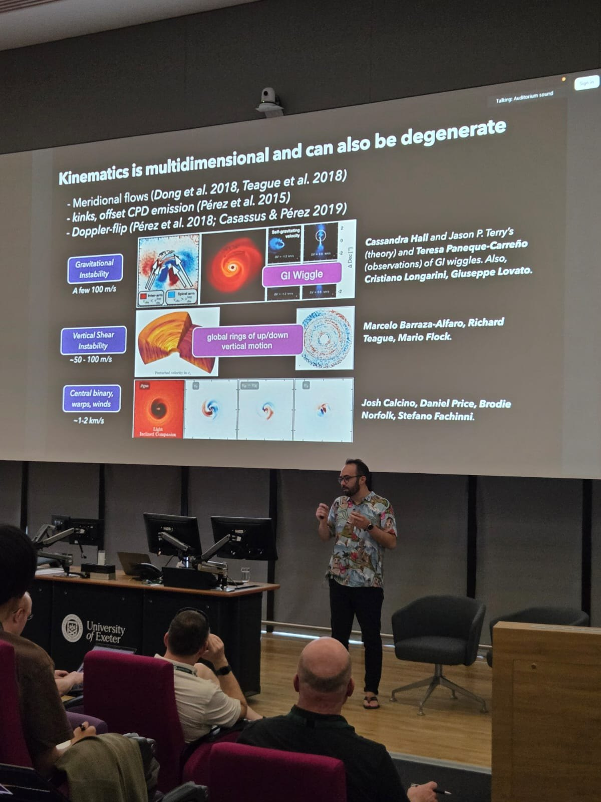

{kind=link}

Talk on disc evolution and planet formation in the HD 104237 triple system.
A broad delegation of researchers, students and alumni from the Millennium Nucleus YEMS took part in Discs on the Exe, an international conference held at the University of Exeter, United Kingdom, during the final week of July 2026. The meeting brought together specialists from around the world to discuss how circumstellar discs form, evolve and disperse, and how planetary systems emerge within them.
Organised as part of the 25th anniversary of the University of Exeter Astrophysics Group, the conference featured ten invited reviews, approximately 120 oral contributions and an extensive poster session. YEMS participation spanned career stages and showcased the breadth of the Nucleus' research, from young discs and eruptive stars to planet-disc interactions, solid growth and debris discs.

Sebastián Pérez delivered the invited observational review in the Planets in discs and how they shape them session. His talk critically examined how convincing the evidence is that young planets sculpt protoplanetary discs. It moved through different levels of evidence —from rings, cavities and spirals to multi-tracer observations, perturbations in gas kinematics and direct detections— and emphasised the need to distinguish structures that are compatible with planets from observations that establish a more robust causal connection.
Pérez also chaired one of the main sessions devoted to planet-disc interactions. Sebastián Marino, a YEMS researcher and member of staff at the University of Exeter, played a central organisational role: he chaired the Scientific Organising Committee, served on the Local Organising Committee and led one of the debris-disc sessions.
The YEMS delegation presented results across several of the meeting's central themes. Camilo González-Ruilova gave the talk Does the environment affect planet formation?, connecting large-scale structures —including envelopes, outflows and accretion streamers— with the substructures seen in discs in the Ophiuchus molecular cloud. Antonio Garufi presented a census of 268 discs observed in the near infrared, highlighting the role of the environment and late infall in generating disc structures.
Antonio Hales showed new ALMA observations of the HD 104237 triple system, where multiplicity limits the spatial extent of the disc without necessarily removing the material available for planet formation. James Miley presented some of the first spatially resolved observations of protoplanetary discs with ALMA Band 1, tracing millimetre-sized “pebbles” —the precursors of planetesimals— in the HD 163296 disc.
Student participation was particularly prominent. Anuroop Dasgupta presented new evidence for a deeply embedded substellar companion candidate in the eruptive V960 Mon system, a possible example of formation through gravitational instability, as well as a poster on the inner structure of discs around Herbig Ae/Be stars. Fernando Castillo presented simulations of the survival of vortices in gas-rich debris discs and the conditions under which these structures may concentrate dust. Prachi Chavan also shared progress from her research during the meeting.

YEMS was also represented in the poster session. YEMS alumna Juanita Antilen presented an analysis of the limitations of using gap contrast to infer vertical dust diffusion with dust-evolution models. Claudio Hernández-Vera presented results from the ALMA-DECO programme on the distribution of formaldehyde (H2CO) across a sample of protoplanetary discs around T Tauri stars.
The joint participation of established researchers, early-career scientists, students and alumni reflects one of YEMS' central goals: building a connected community that combines frontier observations, simulations and new methodologies to understand the origins of planetary systems.
Image gallery

Talk on disc evolution and planet formation in the HD 104237 triple system.
Invited review on the observational evidence for planet-disc interactions.
Part of the YEMS delegation attending the conference in Exeter.
Talk on the pebble population in protoplanetary discs observed with ALMA Band 1.

Session devoted to the dynamics of gas-rich debris discs.

Talk on eruptive young stars and the formation of substellar companions.

Talk on the survival of vortices in gas-rich debris discs.
Official group photograph from Discs on the Exe 2026.

Session on the relationship between the star-forming environment and disc evolution.

Talk on how the environment affects planet formation.

Discussion of the different levels of evidence used to identify planets in discs.

Review of kinematic signatures and their possible degeneracies in protoplanetary discs.
Photographs: YEMS team and Discs on the Exe organisers.
Further information: official Discs on the Exe website.
{kind=link}
{kind=link}
{kind=link}
{kind=link}
{kind=link}
{kind=link}
{kind=link}
{kind=link}
{kind=link}
{kind=link}
{kind=link}